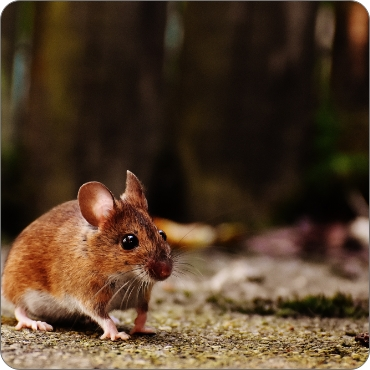
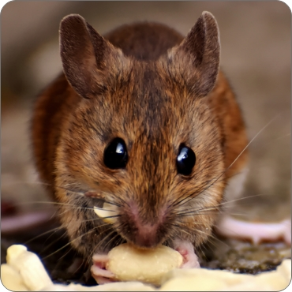

Rodents Control
Treating Customers Like Family
Rodents Control


Get rid of mice & rats today! We provide safe & effective rodent extermination & removal services for homes & businesses.
Safe and Guaranteed rodent control services for your residential or commercial property. Rodent inspection, trapping, exclusion, and sanitation. JQube licensed rodent exterminators will inspect your property to develop a custom rodent treatment plan to eliminate all rodents from your home or business.
Rodents are extremely diverse in their ecology and lifestyles and can be found in almost every terrestrial habitat, including human-made environments.
Most rodents are small animals with robust bodies, short limbs, and long tails. They use their sharp incisors to gnaw food, excavate burrows, and defend themselves. Most eat seeds or other plant material, but some have more varied diets.
Some rodent species are serious agricultural pests, eating large quantities of food stored by humans.
Rodents are also significant vectors of disease.The black rat, with the fleas that it carries, plays a primary role in spreading the bacterium Yersinia pestis responsible for bubonic plague, and carries the organisms responsible for typhus, Weil's disease, toxoplasmosis and trichinosis. A number of rodents carry hantaviruses, including the Puumala, Dobrava and Saaremaa viruses, which can infect humans. Rodents also help to transmit diseases including babesiosis, cutaneous leishmaniasis, human granulocytic anaplasmosis, Lyme disease, Omsk hemorrhagic fever, Powassan virus, rickettsialpox, relapsing fever, Rocky Mountain spotted fever, and West Nile virus.
Rats and mice are both rodents, so look similar - the biggest difference is their size. Rats are larger and heavier while mice have smaller slender bodies. Mice also have long slender tails (for their body size) covered in hair compared to rat tails which are shorter, thicker and hairless.
Rats and mice are destructive pests that can spread disease, contaminate food, and destroy property. The rodent population grow rapid, Thus, its advisable to targret them when they are smaller in number before it becomes a full blown infestation.A successful and effective rodent control strategy typically involves sanitation measures, rodent proofing and population reduction (trapping).
Rodent Identification
Due to their damaging habits and tendency to carry diseases, mice and rats are some of the worst pests to have in homes and businesses. Our this guide will help you identify any uninvited guests you may have on your property, allowing you to keep your home or business pest-free.
Rat Infestation and damage
The most obvious sign of a rat infestation is the presence of dead or living rats. Rats prefer to hide, given enough space, so if rats are observed in plain sight, it is likely that a full-blown infestation already exists. When space becomes limited due to increased population, rats are forced out into the open. Rat droppings may be present, indicating a healthy, feeding rat population. Rats also tend to leave dirt or grease marks along walls and floorboards.
You may never see a mouse or rat unless an infestation is severe. Look for signs of rat or mouse infestation:
- Rodent droppings around food packages, in drawers or cupboards, and under the sink.
- Nesting material such as shredded paper, fabric, or dried plant matter.
- Signs of chewing on food packaging.
- Holes chewed through walls and floors that create entry points into the home.
- Stale smells coming from hidden areas.
Rat Bites and Treatment
Rats can spread disease through biting or contact with their fecal matter or droppings. They can cause damage through their gnawing and feeding on everything from electrical wires to crops. They can be carriers of many serious diseases. Among the diseases rats can transmit to humans or livestock are murine typhus, leptospirosis, salmonellosis (food poisoning), and rat bite fever. Both roof and Norway rats can carry the Plague.
Treatment :
Discourage rats and mice from taking up residence on your property by removing food and water sources, and items that can provide them shelter:
- Seal holes inside and outside the home to keep rodents out. This may be as simple as plugging small holes with steel wool, or patching holes in inside or outside walls.
- Remove potential rodent nesting sites from your property, including leaf piles and deep mulch.
- Clean up food and water sources in and near your house.
- Keep kitchen garbage in containers with tight-fitting lids.
- Turn compost piles to cover newly added food scraps.
- Stop feeding outdoor birds while you are controlling an infestation or feed only huskless items that leave less residue that can be food for rodents.
Most rodent problems involve one of three common rodent pests... house mice, Norway rats or roof rats. While they are all rodents, each has its own unique physical characteristics and behavior. In addition, you may have problems caused my Meadow Voles or Moles. The first step in addressing a rodent problem is to correctly identify the pest species you are dealing with.
House Mouse
The house mouse is easy to recognize, generally 16-18 cm in length and black or dusty gray in color. It is a nibbler. Inquisitive, though it stays close to its nest, which is typically 10-30 ft from a food and water source. Mice typically make their nests from string, shredded paper or straw. Its food preferences include grains, cereals, meats, fish, etc.
Norway Rat
The Norway rat is a large rodent, usually 30-45 cm in length, weighing 10-17 ounces with reddish brown fur. Norway rats typically nest in burrows 90-450 ft from a food and water source. With its powerful front teeth, a Norway rat can gnaw through wood, electrical cables, pipes and other objects. It is very suspicious of anything new in its environment. Its food preferences include grains, meats, fish, almost anything.
Roof Rat
The black roof rat is smaller, weighing 6-9 ounces, has a thin body, pointy nose, large ears and tail, and is dark gray in color. It nests in trees/rooftops 100-300 ft from a food or water source. Its food preferences include fruits, vegetables, grains and seeds.
Rat Behaviour
Rats are exploratory; however, at the same time, they are naturally neophobic (the fear and avoidance of new objects). Neophobia is a survival mechanism to protect from the new and unknown and often occurs when rats are presented with freshly placed rodenticide bait or bait box or monitoring devices. Thus, they often avoid traps and baits for several days or more following their initial placement.
The movement of rats and mice is characterised by a 24-hour pattern (circadian rhythm). Rats leave their nest for food and water, and breeding. The time when rats are away from their nests is generally between sunset and sunrise, ie they are nocturnal, with most of their eating occurring first and last thing during this period. This moving mainly during the hours of darkness is a safety mechanism to help protect from predation.
A rat’s feeding behaviour reflects its social status, and usually the dominant rats feed exclusively in darkness while the subordinate rats feed in the early daylight hours, thus avoiding any competition or threat from the dominants. Therefore, the dominant rats will eat the bait first and die first and the second ‘pulse’ of deaths is from the juveniles or sub-dominants.
Mice
A mouse xis a small rodent. Characteristically, mice are known to have a pointed snout, small, rounded ears, a body-length scaly tail, and a high breeding rate. The best-known mouse species is the common house mouse. Mice are also popular as pets. In some places, certain kinds of field mice are locally common. They are known to invade homes for food and shelter.
Mice features
The easiest distinguishing feature is the smaller body size of the house mouse at 3-10 cm long, compared to a rat’s body length of 16 - 40 cm. However, an adult mouse can be easily confused with a young rat.
- A mature mouse can be distinguished from a young rat by its larger ears and longer tail compared to its body length than the rat.
- A young rat also has distinctly larger feet and head compared to the body than a mouse.
- Mice are usually light grey or brown in colour with a lighter shade on their bellies.
Mice Behaviour
Mice are nocturnal, meaning they like to sleep during the day. This is why pet mice or house mice can be heard playing or foraging during the night. Most wild mice are timid toward humans and other animals, but they are very social with other mice. Domestic mice are very friendly toward humans and can make good pets for older children and adults. When homes are infested with mice, humans will often find chewed up wires, books, papers and insulation around their home. Mice aren't eating these items, they are chewing them into pieces that they can use to make their nests. This is because mice nests are made from whatever the female mouse can find.